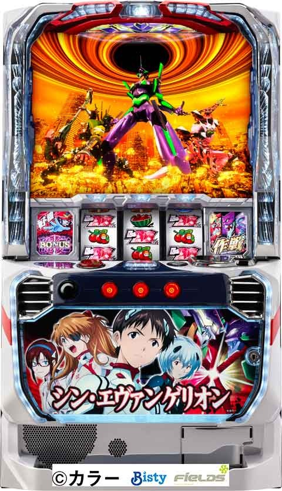
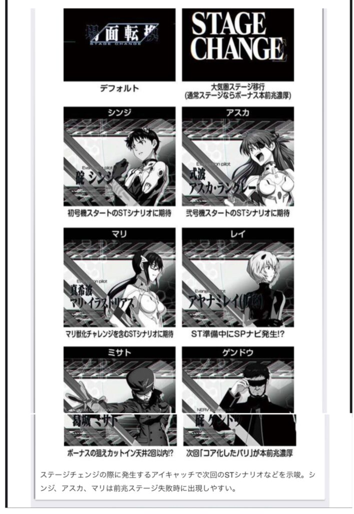
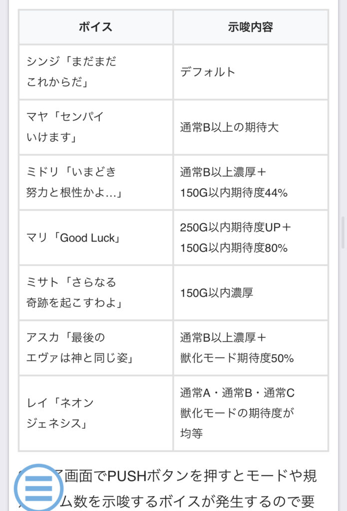
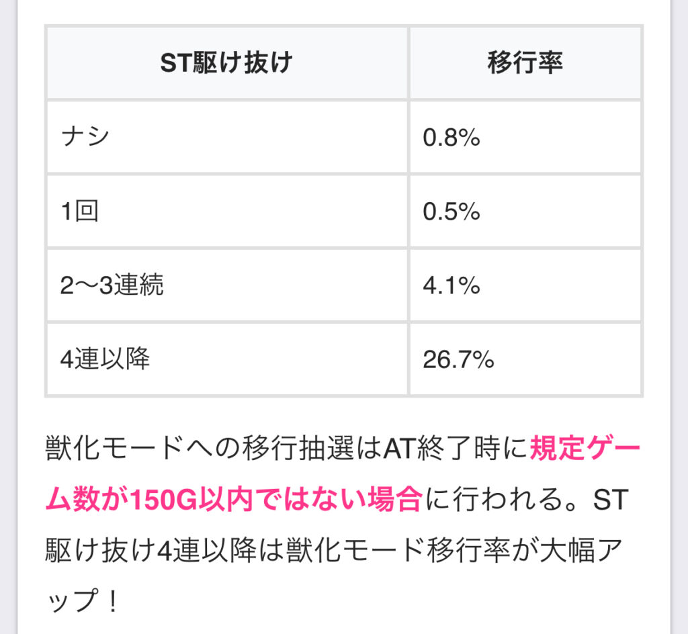
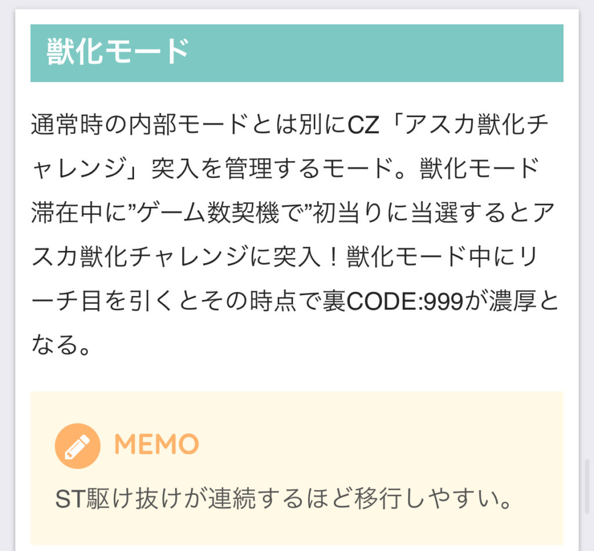
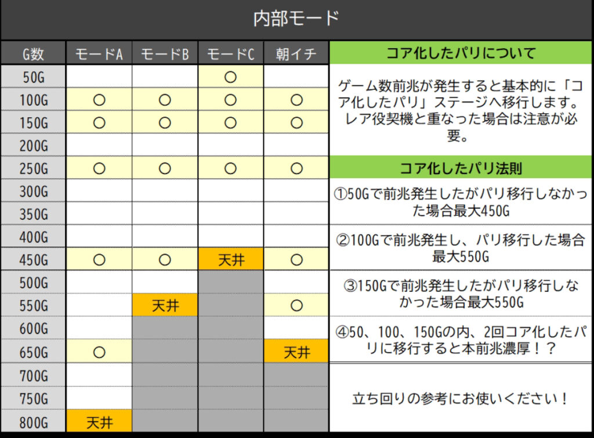
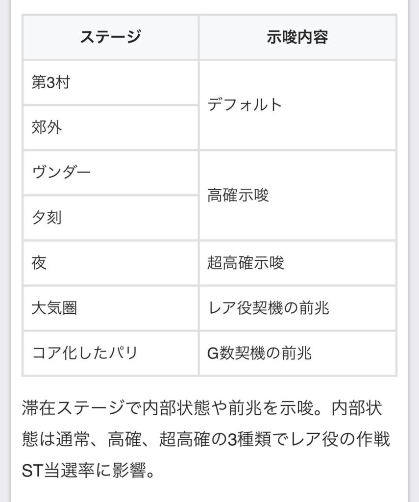
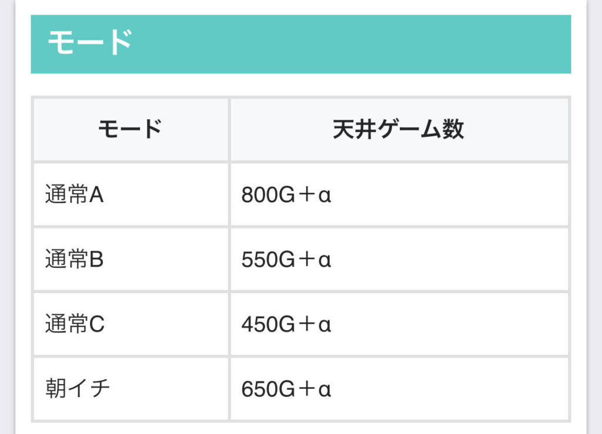
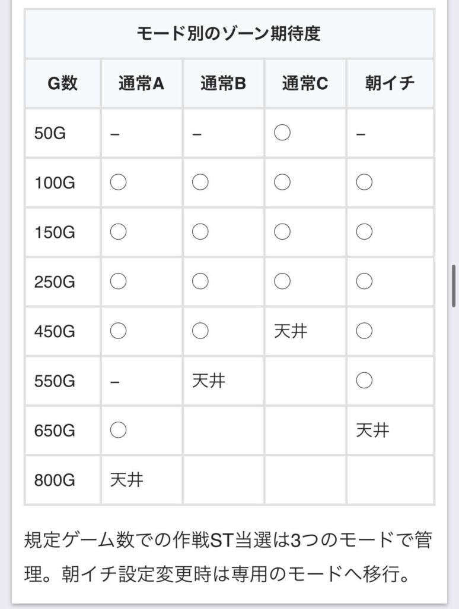
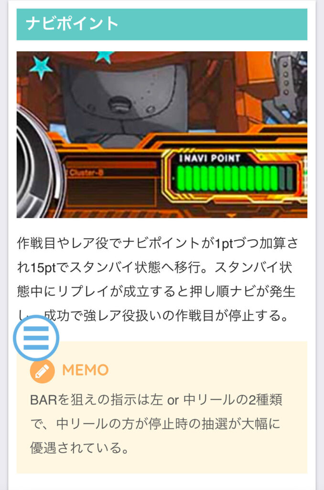

Lシン・エヴァンゲリオン

【天井情報】
通常時800G+α 作戦ST当選
※設定変更時は650G+αに短縮
ボーナス間1200G+α 次回初当たりがボーナス
【リセット判別】
不明
【有利区間について】
有利区間リセット時は「三機殲滅」に突入
有利区間切れ条件 差枚プラス時に「三機殲滅」突入で有利区間リセット？
狙い目
【リセット狙い】
330Gから
・150ゾーン 130Gから
・250ゾーン 210Gから
【天井狙い】
540Gから
作戦ST駆け抜け後 330Gから
作戦ST４回連続駆け抜け以降 0Gから
【ボーナス間天井狙い】
780Gから
※作戦ST間0Gまたは100ゾーン抜け後の条件悪い状況でも打てるボーダー
【ゾーン狙い】
・100ゾーン
作戦ST駆け抜け後 85Gから
2回連続以上駆け抜け後 70Gから
・150ゾーン
ボーナス後 130Gから
【ナビポイント狙い】
13ptから
【有利区間切れ狙い】
不明
【アイキャッチ狙い】
ゲンドウ 作戦ST当選まで
ミサト かなりボーダー下げれそう
レイ、マリ 少しボーダー下げれそう

やめ時
ボーナス間ハマりを確認して狙えないならST後即やめ
AT終了画面ボイス
・アスカ AT当選まで
・マリ、ミサト 150Gゾーン消化まで
獣人化モード狙い ST駆け抜け4回連続はボーナス当選まで

その他
【獣人化モード】


ゲーム数前兆の法則について
参考元 島国購買部さん





参考元
基本情報
- メーカー: ビスティ
- 機械割: 98.2% 〜 114.9%
- 導入開始日: 2025年01月20日（月）
- ゲーム性概要: ●パチスロエヴァンゲリオンシリーズの最新作がスマスロで登場 ●通常時はおもにレア役・ゲーム数・リーチ目で初当りを目指すシンプルな仕様 ●STを規定回数クリアでボーナスへ ●シナリオをクリアすると三機殲滅（特化ゾーン）を獲得 ●ボーナス終了後の一部で上位ATをかけたCZへ突入


打ち方
打ち方・小役
打ち方（小役狙い）
「最初に狙う絵柄」

左リールに白7を目安にチェリーを狙う。
「チェリー停止時」 成立役…チェリーorチェリー作戦目or覚醒リプレイorリーチ目

右リール中段にリプレイ停止で弱チェリー。リプレイ以外が停止でチェリー作戦目。
「白7下段停止時」 成立役…ハズレorリプレイor共通ベルor作戦目orリーチ目

押し順ナビなしで揃うベルは共通ベル。
「スイカ停止時」 成立役…スイカorスイカ作戦目or暴走リプレイorリーチ目

中リールにスイカを、右リールにBARを目押し（見えにくい人はどちらもBAR目安でOK）。右リールにBARを狙わなかった場合、スイカとスイカ作戦目が同一の停止形になるので判別できない。
［白7はスイカの代用］

白7の目押しが早く、スイカを引き込めなかった場合は上段に白7が停止。この場合も中＆右リールにスイカを狙えば3枚を取得できる。
「小役の停止形」

通常時の作戦目は小Vリプレイの形で停止。ST中などは、押し順ナビからも作戦目が停止する可能性がある。
「暴走リプレイ・覚醒リプレイ・フリーズリプレイ」

暴走リプレイ、覚醒リプレイ、フリーズリプレイの3役は、リプレイやレア役成立後の液晶下部にある台座発光中のみ出現する可能性がある。
変則押しはNG
通常時、押し順ナビなし時は左リール第1停止での消化を推奨する。
リーチ目／出目法則
リーチ目の恩恵
| 状態 | 恩恵 |
|---|---|
| 通常時 | ボーナス直撃 |
| 作戦中 | フェーズ進行＆Vストック獲得 |
| 三機殲滅中 | 進行ストック獲得＋アディショナルインパクト成功濃厚 |

リーチ目Eのみ、リプレイやレア役成立後の台座発光中のみ出現する可能性がある。
リール制御
押し順ナビ発生時の作戦目判別
作戦目は順押し時は小Vリプレイ、押し順ナビ発生時はベルテンパイハズレの形で停止（いずれも同じ共通1枚役）。押し順ナビ発生時は、特定の箇所を目押しすることで作戦目を第2停止の段階で判別できる。 どの押し順の場合も、2確目停止かつ作戦進行に当選した場合の一部で特殊SEが発生する。
「231ナビ時」

「321ナビ時」

「213ナビ時」

「312ナビ時」

解析情報通常時
小役関連
小役確率
| 役 | 確率 |
|---|---|
| 共通ベル | 1/53.0 |
| 作戦目 | 1/5.6 |
| リプレイ | 1/8.3 |
| チェリー | 1/65.1 |
| スイカ | 1/88.3 |
| チェリー作戦目 | 1/829.6 |
| スイカ作戦目 | 1/829.6 |
| リーチ目ABCD | 1/2048.0 （全役の合算値） |
| リーチ目E | 1/2048.0 （全役の合算値） |
| 暴走リプレイ | 1/2048.0 （全役の合算値） |
| 覚醒リプレイ | 1/2048.0 （全役の合算値） |
| フリーズリプレイ | 1/2048.0 （全役の合算値） |
| 弱レア役合算 | 1/37.5 |
| 強レア役合算 | 1/414.8 |
| レア役合算 | 1/34.4 |
リーチ目はボーナス直行フラグで、ボーナス終了後に作戦STへ突入。リーチ目E・暴走リプレイ・覚醒リプレイ・フリーズリプレイは台座発光中のみ出現する可能性がある。
ナビポイント

作戦目・レア役成立時に液晶右下のナビポイントを1ptずつ加算していき、 15pt貯まるとスタンバイ状態へ移行 。スタンバイ状態中のリプレイ成立時に押し順ナビが発生し、BARが止まれば強レア役（押し順作戦目）として抽選がおこなわれる。
「BARを狙え回数天井」 ナビポイント契機のBARを狙えは、 6回目までに必ずBARが停止 。回数はBARの停止（作戦目停止）or有利区間リセットまで引き継ぐ。例えば通常時に狙えを5回失敗した状態で作戦STに当選した場合、有利区間がリセットされなければ次のBARを狙えで必ず作戦目が停止する。
［スタンバイ状態］

［BARを狙え］

左リールに狙うパターンと中リールに狙うパターン（狙えのBARが左に表示されるか中に表示されるか）の2種類があり、BARが中段に止まれば成功。期待度は左リールよりも中リールに止まった場合の方が圧倒的に高い。
作戦ST当選率（設定1） 通常中
| 役 | リールロックなし | リールロックあり |
|---|---|---|
| チェリー | ー | 32.4% |
| スイカ | ー | 32.4% |
| チェリー作戦目 | 25.0% | 70.3% |
| スイカ作戦目 | 25.0% | 70.3% |
| 押し順作戦目 | ー | 70.3% |
| 左にBARを狙え成功（※） | 19.9% | ー |
| 中にBARを狙え成功（※） | 70.3% | ー |
高確中
| 役 | リールロックなし | リールロックあり |
|---|---|---|
| チェリー | 0.4% | 60.5% |
| スイカ | ー | 60.5% |
| チェリー作戦目 | 62.5% | 100% |
| スイカ作戦目 | 62.5% | 100% |
| 押し順作戦目 | ー | 100% |
| 左にBARを狙え成功（※） | 39.1% | ー |
| 中にBARを狙え成功（※） | 100% | ー |
超確中
| 役 | リールロックなし | リールロックあり |
|---|---|---|
| チェリー | 25.0% | 100% |
| スイカ | 11.7% | 100% |
| チェリー作戦目 | 100% | 100% |
| スイカ作戦目 | 100% | 100% |
| 押し順作戦目 | ー | 100% |
| 左にBARを狙え成功（※） | 100% | ー |
| 中にBARを狙え成功（※） | 100% | ー |
※ナビポイントMAX後のBARを狙え契機（リールロックは発生しない）
台座ランプの色別・リールロック発生率
| 役 | 白 | 青 | 橙 |
|---|---|---|---|
| 弱レア役 | 0.4% | 13.7% | 100% |
| 強レア役 | 15.6% | 23.4% | 100% |
※弱レア役…チェリー・スイカ 強レア役…チェリー作戦目・スイカ作戦目
台座ランプ発光中はリールロックの発生率がアップ。リールロック発生時のレア役は、非発生時に比べて作戦ST当選率が高い。また、リーチ目E・暴走リプレイ・覚醒リプレイ・フリーズリプレイは台座ランプ発光中のみ出現する。
内部状態関連
リールロック高確率

リプレイ・レア役成立後に、液晶下部の台座ランプが点灯。点灯中はリールロックの発生率がアップしているだけでなく、 リーチ目E・暴走リプレイ・覚醒リプレイ・フリーズリプレイが出現する可能性もある 。 台座の点灯段階は白＜青＜橙の3段階で、リプレイやレア役を続けて引くことで色が昇格。押し順ベルこぼしで消灯する（作戦目は点灯を維持）。
内部状態移行率
通常時の内部状態は通常＜高確＜超高確の3種類で、滞在状態によってレア役成立時の作戦ST当選率が変化する。 昇格は弱レア役（チェリー・スイカ）で抽選され、昇格時は8Gの保証ゲーム数を獲得。8G消化後はハズレ目で転落が抽選される。超高確から高確へ転落した場合も8Gの保証ゲームを獲得できる。
作戦ST終了後・内部状態振り分け
| 状態 | 振り分け |
|---|---|
| 通常 | 69.5% |
| 高確 | 30.1% |
| 超高確 | 0.4% |
内部状態昇格率（設定1）
| 役 | 通常→高確 | 高確→超高確 |
|---|---|---|
| チェリー | 25.4% | 8.2% |
| スイカ | 35.2% | 30.1% |
内部状態転落率（設定1）
| 役 | 高確→通常 | 超高確→高確 |
|---|---|---|
| ハズレ目 | 27.3% | 27.3% |
モード
通常モード概要
通常時のモードは3種類（＋朝イチ専用モード）で、 作戦ST当選までの規定ゲーム数を管理 。モードの種類はボーナスや作戦ST終了後に再抽選される。 初当りは基本的に作戦STなので、STでボーナスを引けずにボーナス間1200G消化すると、モード不問で初当りがボーナスになる（ボーナス後に作戦STへ）。
モードごとの天井ゲーム数
| モード | 天井 |
|---|---|
| 通常A | 800G＋α |
| 通常B | 550G＋α |
| 通常C | 450G＋α |
| 朝イチ | 650G＋α |
作戦STをスルーした場合、次のモードは通常B以上濃厚。スルー回数が多いほど上位のモードや獣化モードに移行しやすい。
通常時モード別前兆発生期待度
| ゲーム数 | 朝イチ | 通常A | 通常B | 通常C |
|---|---|---|---|---|
| 50G | ◯ | |||
| 100G | ◯ | ◯ | ◯ | ◯ |
| 150G | ◯ | ◯ | ◯ | ◯ |
［150G～の前兆消化まで］作戦ST当選期待度
| 設定 | 全モードのトータル | 朝イチモード | 作戦STスルー後 |
|---|---|---|---|
| 1 | 23.4% | 35.2% | 35.8% |
| 2 | 23.9% | 35.2% | 35.8% |
| 3 | 27.2% | 35.2% | 35.8% |
| 4 | 30.3% | 35.2% | 35.8% |
| 5 | 32.0% | 35.2% | 35.8% |
| 6 | 33.4% | 35.2% | 35.9% |
全モードを加味したゲーム数ごとの期待度
| ゲーム数 | 期待度 |
|---|---|
| ～150G | 大チャンス |
| 250G | チャンス |
| 450G | チャンス |
| 550G | 大チャンス |
| 650G | チャンス |
| 800G | 大チャンス |
獣化モード
通常のモードとは別に、アスカ獣化チャレンジ突入を管理する獣化モードが存在。獣化モード滞在中の作戦ST当選時は、アスカ獣化チャレンジに突入する。
作戦ST終了時・獣化モード当選率
| スルー回数 | 当選率 |
|---|---|
| 0スルー | 0.8% |
| 1スルー | 0.5% |
| 2～3スルー | 4.1% |
| 4スルー以上 | 26.7% |
作戦STスルー後、150G＋α以内が規定ゲーム数に “選択されなかった” 場合に、獣化モードへの移行を抽選する。
作戦STスルー回数ごとのモード振り分け 作戦ST1スルー
| 設定 | 通常A | 通常B | 通常C |
|---|---|---|---|
| 1 | ー | 96.4% | 3.6% |
| 2 | ー | 96.5% | 3.5% |
| 3 | ー | 96.5% | 3.5% |
| 4 | ー | 96.5% | 3.5% |
| 5 | ー | 96.5% | 3.5% |
| 6 | ー | 96.4% | 3.6% |
作戦ST2～3スルー
| 設定 | 通常A | 通常B | 通常C |
|---|---|---|---|
| 1 | ー | 91.0% | 9.0% |
| 2 | ー | 91.2% | 8.8% |
| 3 | ー | 91.4% | 8.6% |
| 4 | ー | 91.0% | 9.0% |
| 5 | ー | 91.3% | 8.7% |
| 6 | ー | 91.2% | 8.8% |
作戦ST4スルー以上
| 設定 | 通常A | 通常B | 通常C |
|---|---|---|---|
| 1 | ー | 68.3% | 31.7% |
| 2 | ー | 70.3% | 29.7% |
| 3 | ー | 70.9% | 29.1% |
| 4 | ー | 72.1% | 27.9% |
| 5 | ー | 68.9% | 31.1% |
| 6 | ー | 68.3% | 31.7% |
4連続でスルーした場合は通常C移行のチャンスとなる。
アスカ獣化チャレンジ（CZ）
アスカ獣化チャレンジ概要

作戦ST当選時の一部で突入する特殊CZ。CZに成功すれば約999枚＋αを獲得できる上位ボーナス「裏CODE：999」へ突入する。
アスカ獣化チャレンジ性能
| 項目 | 内容 |
|---|---|
| 突入契機 | 作戦ST当選時の一部 |
| 継続ゲーム数 | 10G |
| 成功時 | 裏コード：999突入 |
| 失敗時 | 作戦ST突入 |
| 成功期待度 | 約38% |
アスカ獣化チャレンジ当選率
| 状態 | 当選率 |
|---|---|
| 非獣化モード中 | ゲーム数契機の作戦ST当選時の0.4% |
| 獣化モード中 | ゲーム数契機の作戦ST当選で当選濃厚 |
裏CODE：999当選率
| 役 | 当選率 |
|---|---|
| リプレイ | 7.8% |
| 作戦目 | 3.9% |
| 共通ベル | 7.8% |
| チェリー | 100% |
| スイカ | 100% |
| チェリー作戦目 | 100% |
| スイカ作戦目 | 100% |
| 確定役 | 100% |
| トータル期待度 | 38.4% |
※確定役…リーチ目A～E、暴走リプレイ、覚醒リプレイ、フリーズリプレイ
レア役（作戦目除く）なら成功濃厚 だ。
演出動画
ロングフリーズ
通常時のフリーズリプレイ成立時に発生。期待枚数約2000枚を誇る裏CODE：999へ突入する。
解析情報ボーナス時
作戦ST
エヴァンゲリオンインパクト

作戦開始前に移行する作戦種別を決定するゾーンで、小役を引けば作戦種別昇格のチャンスとなる。
「シナリオ」

出撃する機体はシナリオで決まっていて、最大10回のボーナス当選で三機殲滅（特化ゾーン）を獲得する。シナリオはボタンPUSHで確認可能だ。
「1G目」

エヴァの種類と作戦内容
| エヴァ | 内容 |
|---|---|
| 8号機 | パリ作戦以上 |
| 2号機 | ヤマト作戦以上 |
| 初号機 | US作戦以上 |
出撃する機体を決定。8号機＜2号機＜初号機の順に、上位の作戦に期待できる。
「2G目」

1G目で選択された機体に対応した作戦パネルが表示。成立役に応じて作戦の種類を決める。
「3G目」

3G目に作戦を決定。このゲームで引いた小役でも作戦の昇格が抽選される。
2or3G目の小役別・作戦昇格期待度
| 役 | 期待度 |
|---|---|
| リプレイ・ベル | 昇格のチャンス |
| チェリー・スイカ | 1段階昇格濃厚 |
| チェリーorスイカ作戦目 | 2段階昇格濃厚 |
作戦ST概要

1セット10G＋αのST。作戦目やレア役などで、選択された作戦ごとの 規定回数STを継続させればボーナス当選 となる。ST当選時に決まるシナリオによって出撃するエヴァ（作戦の振り分け）が変化。 シナリオを全部クリア（最大10回ボーナス当選）で特化ゾーンの三機殲滅を獲得し、エクストラシナリオへ移行する。
作戦ST性能
| 項目 | 内容 |
|---|---|
| 突入契機 | 初当り時・ボーナス後 |
| 継続ゲーム数 | 10G＋αのST型 |
| 消化中の抽選 | 小役で規定のST回数をクリアすればボーナス |
| STの規定回数 | 1～5回 |
| 平均ボーナス期待度 | 約72% |
作戦の種類と規定ST回数
| 作戦 | 規定回数 |
|---|---|
| パリ作戦 | 5回 |
| ヤマト作戦 | 4回 |
| US作戦 | 3回 |
| 第8使徒迎撃作戦 | 2回 |
| ヤシマ作戦 | 1回 |
「進行ストックとVストック」

初回時は進行ストックを1つ持った状態からスタート。STの継続に失敗した場合に使用されるので、自力で継続させている間は消費しない。 Vストックは持っている数だけボーナスに当選する。
「殲滅エクストラ」

作戦中のレア役の一部で移行する特殊状態。滞在中（10〜30G）は純増が約5.0枚/GのAT状態となり、フェーズの進行抽選が大幅に優遇される。
「レイチャンス」

作戦ST中に発生するチャンス演出。押し順当てに正解すればフェーズが進行する。
「突発チャンス」 STゲーム数消化後、押し順ベルこぼしまでの間は、突発チャンスが発生する可能性あり。作戦目orレア役が成立すればボーナスに当選する。
突破チャンス確率＆成功期待度
| 項目 | 抽選値 |
|---|---|
| 突入率 | 4.0% |
| 成功期待度 | 23.8% |
小役ごとの抽選内容 通常中
| 役 | 進行期待度 | 備考など |
|---|---|---|
| 作戦目 | 20.7% | 非進行時は次ゲームが高確 |
| リプレイABD | ー | STゲーム数をホールド、 2連続成立で次ゲームが高確 |
| リプレイC | 100% | 中押し狙えが発生→成功 |
| チェリー | 50.8% | 非進行時は次ゲームが高確 |
| スイカ | 50.8% | 非進行時は次ゲームが高確 |
| チェリー作戦目 | 100% | 殲滅エクストラ抽選アリ |
| スイカ作戦目 | 100% | 殲滅エクストラ抽選アリ |
| リーチ目A～E | 100% | Vストック獲得濃厚 |
| 暴走リプレイ | 100% | Vストック獲得濃厚 |
| 覚醒リプレイ | 100% | Vストック獲得濃厚 |
| フリーズリプレイ | 100% | Vストック獲得濃厚 |
高確中・作戦最終ゲーム
| 役 | 進行期待度 | 備考など |
|---|---|---|
| 作戦目 | 100% | ー |
| リプレイABD | ー | 高確中は高確を維持 |
| リプレイC | 100% | 中押し狙えが発生→成功 |
| チェリー | 100% | ー |
| スイカ | 100% | ー |
| チェリー作戦目 | 100% | 殲滅エクストラ濃厚 |
| スイカ作戦目 | 100% | 殲滅エクストラ濃厚 |
| リーチ目A～E | 100% | Vストック獲得濃厚 |
| 暴走リプレイ | 100% | Vストック獲得濃厚 |
| 覚醒リプレイ | 100% | Vストック獲得濃厚 |
| フリーズリプレイ | 100% | Vストック獲得濃厚 |
殲滅エクストラ中
| 役 | 進行期待度 | 備考など |
|---|---|---|
| 作戦目 | 100% | ー |
| リプレイABD | ー | ゲーム数をホールド |
| リプレイC | 100% | 中押し狙えが発生→成功 |
| チェリー | 100% | ー |
| スイカ | 100% | ー |
| チェリー作戦目 | 100% | 進行ストックも獲得 |
| スイカ作戦目 | 100% | 進行ストックも獲得 |
| リーチ目A～E | 100% | Vストック獲得濃厚 |
| 暴走リプレイ | 100% | Vストック獲得濃厚 |
| 覚醒リプレイ | 100% | Vストック獲得濃厚 |
| フリーズリプレイ | 100% | Vストック獲得濃厚 |
作戦成功後
| 役 | 進行期待度 | 備考など |
|---|---|---|
| 作戦目 | 20.7% | BET時にカットイン発生で 進行をストック |
| リプレイABD | ー | ー |
| リプレイC | ー | ー |
| チェリー | 100% | ー |
| スイカ | 100% | ー |
| チェリー作戦目 | 100% | 殲滅エクストラ抽選アリ |
| スイカ作戦目 | 100% | 殲滅エクストラ抽選アリ |
| リーチ目A～E | 100% | Vストック獲得濃厚 |
| 暴走リプレイ | 100% | Vストック獲得濃厚 |
| 覚醒リプレイ | 100% | Vストック獲得濃厚 |
| フリーズリプレイ | 100% | Vストック獲得濃厚 |
殲滅エクストラ当選率 通常中・フェーズ進行当該ゲーム
| 役 | 10G | 20G | 30G |
|---|---|---|---|
| チェリー | ー | ー | ー |
| スイカ | ー | ー | 0.4% |
| チェリー作戦目 | 28.9% | 1.2% | ー |
| スイカ作戦目 | 28.9% | 1.2% | ー |
高確中・作戦最終ゲーム
| 役 | 10G | 20G | 30G |
|---|---|---|---|
| チェリー | ー | ー | ー |
| スイカ | ー | ー | 0.4% |
| チェリー作戦目 | 94.9% | 5.1% | ー |
| スイカ作戦目 | 94.9% | 5.1% | ー |
シナリオ解説


※上画像は通常シナリオ
通常シナリオ（20種類）、エクストラシナリオ（10種類）、スペシャルシナリオ（10種類）の3系統のシナリオが存在する。 初当り時の通常シナリオをすべてクリアし、三機殲滅を獲得するとエクストラシナリオへ移行 。スペシャルシナリオは三機殲滅終了後に移行する。 シナリオの種類は出撃する機体決定時にPUSHボタンを押すと確認可能だ。
シナリオの種類
| シナリオ | 内容 |
|---|---|
| 通常 シナリオ | ● 20種類 ● 初当り時に選択 ● シナリオ内の作戦をすべてクリア（最大10回）すると三機殲滅をストック |
| エクストラ シナリオ | ● 10種類 ● 通常シナリオをすべてクリア（三機殲滅をストック）後に移行 |
| スペシャル シナリオ | ● 10種類 ● 三機殲滅を消化後に移行 |
通常シナリオをクリアし三機殲滅を獲得しても、三機殲滅へ突入するのはST継続失敗後。そのため、展開次第では三機殲滅へ突入する前にエンディングが発生といったケースもあるが、エンディング後は三機殲滅へ突入するのでムダとはならない。
「マリ獣化チャレンジ」

シナリオ内のどこかのボーナス終了後に、マリ獣化チャレンジが発生。マリ（8号機）が出撃する作戦がチャンス!?
レイチャンス発生確率
| 状態 | 確率 |
|---|---|
| 殲滅エクストラ中以外 | 1/379.4 |
| 殲滅エクストラ中 | 1/362.8 |
殲滅エクストラ中
| 設定 | 4択 | 2択 | 全ナビ |
|---|---|---|---|
| 1 | ー | ー | 100% |
| 2 | ー | ー | 100% |
| 3 | ー | ー | 100% |
| 4 | ー | ー | 100% |
| 5 | ー | ー | 100% |
| 6 | ー | ー | 100% |
微差だが、殲滅エクストラ中はレイチャンス確率がアップ。さらに殲滅エクストラ中は全ナビも濃厚となる。
ST終了後・突発チャンス当選率
| 役 | 当選率 |
|---|---|
| 押し順ベル | 作戦ST終了 |
| 共通ベル | 状態を維持 |
| リプレイ | 状態を維持 |
| 作戦目 | 状態を維持 |
| チェリー | 100% |
| スイカ | 100% |
| チェリー作戦目 | ボーナス当選 |
| スイカ作戦目 | ボーナス当選 |
| 確定役 | ボーナス当選 |
※確定役…リーチ目A～E、暴走リプレイ、覚醒リプレイ、フリーズリプレイ
突発チャンス中・ボーナス当選率
| 役 | 当選率 |
|---|---|
| 押し順ベル | 終了 |
| 共通ベル | 突発チャンスを維持 |
| リプレイ | 突発チャンスを維持 |
| 作戦目 | 100% |
| チェリー | 100% |
| スイカ | 100% |
| チェリー作戦目 | 100% （殲滅エクストラ30Gも獲得） |
| スイカ作戦目 | 100% （殲滅エクストラ30Gも獲得） |
| 確定役 | 100% （殲滅エクストラ30Gも獲得） |
※確定役…リーチ目A～E、暴走リプレイ、覚醒リプレイ、フリーズリプレイ
準備中のSPナビ

作戦STは「×？？ナビ」を消化してから始まるが、一部でナビの下に 「ベルが揃えば進行ストック獲得!?」 の帯が出現するケースがある。この帯が出現している状態のナビがSPナビで、押し順に正解すれば進行ストックを獲得。 押し順に正解する限り進行ストックを獲得できる（不正解で終了）。
SPナビ獲得は作戦ST終了時に抽選され、当選時は次の作戦ST準備中に発動する。
ボーナス
ボーナス概要

出玉増加のメインとなるのはボーナス。消化中はリプレイ・作戦目・レア役成立時に警戒ポイントを獲得していき、20pt貯まると狙え演出が発生。BARが揃えば進行ストックを獲得する。BAR揃いの次ゲームでレア役を引くとWストック（進行ストック＆Vストック）へ昇格する。
ボーナス性能
| 項目 | 内容 |
|---|---|
| 当選契機 | ● 初当り時の一部（リーチ目出現） ● 作戦ST成功後 |
| 獲得枚数 | ● BIG…約150枚＋α ● スーパーBIG…約300枚＋α ● 裏CODE：999…約999枚＋α |
| 消化中の抽選 | ● リプレイ・作戦目・レア役で警戒ポイントを貯め、20pt獲得後のBAR揃いで進行ストックを獲得 ● 進行ストック獲得の次ゲームでレア役を引けばWストックに昇格 |
| その他 | ● 警戒ポイント高確率のスペシャルボーナス（約150枚＋α獲得）あり |
※BIG…白7平行揃い、スーパーBIG…白7斜め揃い、裏CODE：999…白7ダブル揃い
ボーナス種別振り分け
| ボーナス | 振り分け |
|---|---|
| BIG | 87.1% |
| スーパーBIG | 9.8% |
| スペシャルボーナス | 3.1% |
※上位AT中はすべてスーパーBIG
「警戒ポイント」

液晶下部のメーターにポイントを蓄積。5pt獲得ごとにレベルが1段階ずつ上がっていき、4回メーターを貯める（計20pt）と狙え演出が発生する。
［狙え演出］

「スペシャルボーナス」

BIGの一部で突入する、警戒ポイントを高確率で獲得できるボーナスだ。
警戒ポイント振り分け スペシャルボーナス以外
| 獲得ポイント | リプレイ | 作戦目 | 弱レア役 | チェリーor スイカ作戦目 |
|---|---|---|---|---|
| 1pt | 100% | 95.3% | ー | ー |
| 5pt | ー | 4.7% | 75.0% | ー |
| 10pt | ー | ー | 25.0% | ー |
| 20pt | ー | ー | ー | 100% |
| 20pt＋ BAR揃い | ー | ー | ー | ー |
スペシャルボーナス中
| 獲得ポイント | リプレイ | 作戦目 | 弱レア役 | チェリーor スイカ作戦目 |
|---|---|---|---|---|
| 1pt | ー | ー | ー | ー |
| 5pt | 100% | 100% | ー | ー |
| 10pt | ー | ー | ー | ー |
| 20pt | ー | ー | 100% | ー |
| 20pt＋ BAR揃い | ー | ー | ー | 100% |
スペシャルボーナス中はリプレイと作戦目を引くたびに警戒レベルが1段階ずつアップ。レア役はポイントMAX濃厚、チェリー作戦目とスイカ作戦目はポイントMAXかつBAR揃い（進行ストック獲得）濃厚となる。
カットインの期待度
| 役 | 期待度 |
|---|---|
| 下記以外 | 16.7% （擬似遊技） |
| 1枚役（作戦目） | 50.0% |
| チェリー | 100% |
| チェリー作戦目 | 100% |
カットイン発生ゲームの成立役に応じてBAR揃い期待度が変化。作戦目・チェリー・チェリー作戦目の3役は実遊技、その他の役成立時は擬似遊技が発生する。
上位ボーナス
上位ボーナス概要
上位ボーナスは3種類あり、基本的にどれも初当り時に当選する可能性がある。
「暴走ボーナス」

暴走ボーナス性能
| 項目 | 内容 |
|---|---|
| 当選契機 | 通常時の暴走リプレイ成立時 |
| 獲得枚数 | 約100枚＋α |
| 消化中の抽選 | 高確率でVストックを獲得 |
| 期待獲得枚数 | 約1300枚 |
「覚醒ボーナス」

覚醒ボーナス性能
| 項目 | 内容 |
|---|---|
| 当選契機 | 通常時の覚醒リプレイ成立時 |
| 獲得枚数 | 約200枚＋α |
| 消化中の抽選 | 高確率でVストックを獲得 |
| 期待獲得枚数 | 約1800枚 |
暴走ボーナス・覚醒ボーナスでストックしたボーナスは、すべて即放出される。
「裏CODE：999」

裏CODE：999性能
| 項目 | 内容 |
|---|---|
| 当選契機 | アスカ獣化チャレンジ成功時、フリーズリプレイ成立時 |
| 獲得枚数 | 約999枚＋α |
| 消化中の抽選 | 進行ストックを獲得 |
| 期待獲得枚数 | 約2000枚 |
三機殲滅
三機殲滅概要

通常シナリオクリアで獲得するSTタイプの進行ストック特化ゾーンで、ストックを獲得すると8Gが再セットされる。終了後に発生するアディショナルインパクト（1G完結）に成功すれば、獲得した進行ストックがすべてWストック（進行＆Vストック）へ変換される。
三機殲滅性能
| 項目 | 内容 |
|---|---|
| 突入契機 | ● 通常シナリオクリア後 ● 上位AT終了後 ● エンディング後 など |
| 継続ゲーム数 | ● 8G＋αのST型、進行ストック獲得でゲーム数が再セット |
| 消化中の抽選 | ● レア役・BAR揃いで進行ストックを獲得 |
| 期待獲得枚数 | ● 約3100枚 （三機殲滅突入までの枚数含む） |
| その他 | ● 終了後は1Gのアディショナルインパクトへ |
狙えカットイン確率・BAR揃い期待度
| 項目 | 抽選値 |
|---|---|
| 確率 | 1/6.1 |
| 期待度 | 45.8% |
リプレイC＆レア役成立時のストック個数振り分け
| 役 | 1個 | 2個 |
|---|---|---|
| リプレイC | 100% | ー |
| チェリー | 100% | ー |
| スイカ | 100% | ー |
| チェリー作戦目 | 50.0% | 50.0% |
| スイカ作戦目 | 50.0% | 50.0% |
| リーチ目 | 50.0% | 50.0% |
※リプレイC成立時は中リール狙えが発生
「アディショナルインパクト」

三機殲滅終了後1G限定の特殊状態。成立役に応じて三機殲滅で獲得した進行ストックをWストックへ書き換える抽選がおこなわれる。例えば進行ストック5個を獲得した場合、書き換え成功で進行ストック5個＋Vストック5個となるので、この1Gはかなり重要だ。
書き換え成功当選率
| 役 | 当選率 |
|---|---|
| 共通ベル | 100% |
| 作戦目 | 13.7% |
| リプレイ | 27.3% |
| チェリー | 100% |
| スイカ | 100% |
| チェリー作戦目 | 100% |
| スイカ作戦目 | 100% |
| 押し順作戦目 | 100% |
※リプレイの一部、確定役が押し順作戦目として出現
マリ獣化チャレンジ（CZ）
マリ獣化チャレンジ概要

パリ作戦成功後のボーナス終了時の一部で突入する上位ATをかけたCZ。10G間、毎ゲーム成功抽選がおこなわれ成功時はスーパーBIGを経由して上位ATへ突入する。
マリ獣化チャレンジ性能
| 項目 | 内容 |
|---|---|
| 当選契機 | パリ作戦成功後の一部、 特定のシナリオでの8号機が出撃する作戦成功時の一部 |
| 継続ゲーム数 | 10G |
| 成功時 | スーパーBIG＋上位ATへ |
| 失敗時 | 作戦STへ |
| 成功期待度 | 約38% |
マリ獣化チャレンジに突入する可能性のある作戦を含むシナリオの選択率は、通常シナリオ＜エクストラシナリオ＜スペシャルシナリオの順に高い。
オップファータイプ殲滅作戦（上位AT）
オップファータイプ殲滅作戦概要

マリ獣化チャレンジ成功で突入する上位AT。作戦をクリアしてボーナスという基本的な流れは通常の作戦STと共通だが、継続ゲーム数が20G＋αになっているため、 成功期待度が約95%と高く、成功時のボーナスはすべてスーパーBIG になる。 ST中も純増約5.0枚/Gなので、枚数を増やしながらボーナスを目指すことができる。
オップファータイプ殲滅作戦性能
| 項目 | 内容 |
|---|---|
| 当選契機 | マリ獣化チャレンジ成功後 |
| 継続ゲーム数 | 20G＋αのST型 |
| 1Gあたりの純増 | 約5.0枚 |
| STの規定回数 | 8回固定 |
| ボーナス期待度 | 約95% |
| 期待獲得枚数 | 約3600枚（上位AT突入までの枚数含む） |
ツラヌキ・有利区間
ツラヌキ条件と恩恵
| 項目 | 内容 |
|---|---|
| 条件 | エンディング到達後 |
| 恩恵 | 三機殲滅へ |
［エンディング］

エンディング後は三機殲滅からスタート。再び作戦を成功させて上位ATを目指す流れとなる。
演出情報
通常時
ステージ解説
| ステージ | 示唆 |
|---|---|
| 第3村 | デフォルト |
| 郊外 | デフォルト |
| ヴンダー | 高確示唆 |
| 夕刻 | 高確 |
| 夜 | 超高確 |
［第3村］

［郊外］

［ヴンダー］

［夕刻］

［夜］

ナビポイントMAX契機のBARを狙え演出抽選値
| 演出 | 発生確率 | 作戦目期待度 | 本前兆期待度 |
|---|---|---|---|
| デフォルト （下記演出ナシ） | 1/80.83 | 24.29% | 23.44% |
| 第1停止 ヴンダー割り込み | 1/29184.89 | 100% | 100% |
| ミサト カットイン | 1/1610.64 | 100% | 27.33% |
| 中に狙え カットイン | 1/1536.75 | 49.77% | 72.00% |
演出詳細
| 演出 | 詳細 |
|---|---|
| 第1停止 ヴンダー割り込み | ● 第1停止時にいきなりヴンダーが出現。青と赤の2種類の「CHANCE」文字が出現するが、どちらも期待度は100% |
| ミサト カットイン | ● BAR停止後の「CHANCE」が青なら本前兆期待度約26%、赤なら本前兆濃厚 |
| 中に狙え カットイン | ● BAR停止後の「CHANCE」が青なら本前兆期待度約71%、赤なら本前兆濃厚 |
演出法則
| 演出 | パターン | 法則など |
|---|---|---|
| 次回予告 | 発生した時点 | ボーナス濃厚 |
| 次回予告 | 新劇場版：序 | 暴走リプレイ成立 |
| 次回予告 | 新劇場版：Q | 覚醒リプレイ成立 |
| ボイス演出 （※1） | リツコ | 共通ベル対応 |
| ボイス演出 （※1） | レイ | リプレイ対応 |
| ボイス演出 （※1） | アスカ | チェリーorチェリー作戦目対応 |
| ボイス演出 （※1） | マリ | スイカorスイカ作戦目対応 |
| ボイス演出 （※1） | シンジ | チェリー作戦目対応 |
| ボイス演出 （※1） | ミサト | スイカ作戦目対応 |
| ボイス演出 （※1） | カヲル | 全役対応 （リーチ目orボーナス本前兆濃厚） |
| セリフ演出 | 第3停止で返答 | 非前兆中なら高確or超高確 |
| 遅れ | 非前兆中 | チェリー作戦目orリーチ目 |
| 遅れ | 前兆中 | 本前兆濃厚 |
| 小役メーター | 小役矛盾 | 本前兆orリーチ目 |
| 小役メーター | 4つの図柄が同じ | リーチ目濃厚 |
| シャッター演出の マークの色 （※2） | 白 | 作戦目対応 |
| シャッター演出の マークの色 （※2） | 青 | リプレイ対応 |
| シャッター演出の マークの色 （※2） | 黄 | 共通ベル対応 |
| シャッター演出の マークの色 （※2） | 緑 | スイカorスイカ作戦目対応 |
| シャッター演出の マークの色 （※2） | 赤 | チェリーorチェリー作戦目対応 |
| シャッター演出の マークの色 （※2） | 紫 | スイカ作戦目orチェリー作戦目 orリーチ目対応 |
| シャッター演出の マークの色 （※2） | 虹 | 全役対応 （ボーナス濃厚） |
| シャッター演出の マークの色 （※2） | 第1停止時に 名場面演出発展 | 本前兆以上濃厚 |
| 金シャッター | ボーナス濃厚 | |
| ウィンドウ演出 （ヴィレマーク白） | レイ | リプレイ対応 |
| ウィンドウ演出 （ヴィレマーク白） | リツコ | 共通ベル対応 |
| ウィンドウ演出 （ヴィレマーク白） | ミサト | レア役対応 |
| ウィンドウ演出 （新NERV） | 冬月 | レア役対応 |
| ウィンドウ演出 （新NERV） | ゲンドウ | 全役対応（本前兆濃厚） |
| ウィンドウ演出 （ヴィレマーク金） | レイ | 全役対応（本前兆濃厚） |
| ウィンドウ演出 （ヴィレマーク金） | リツコ | 全役対応（本前兆濃厚） |
| ウィンドウ演出 （ヴィレマーク金） | ミサト | 全役対応（本前兆濃厚） |
※1…カヲル以外のボイスは対応役矛盾でリーチ目濃厚（ボイス内容は下表参照） ※2…対応役矛盾で本前兆濃厚
ボイス演出・キャラごとの発生ボイス
| キャラ | ボイス |
|---|---|
| リツコ | 「私の経験よ」 |
| レイ | 「ありがとう」 |
| アスカ | 「あんたバカァ？」 |
| マリ | 「君はよくやってる」 |
| シンジ | 「僕も行くよ」 |
| ミサト | 「現作業を25分後に中断 30分後に出航します」 |
| カヲル | 「僕はカヲル、渚カヲル、 君と同じ運命を仕組まれた子供さ」 |
［セリフ演出］

［シャッター演出］

［ウインドウ演出：ヴィレマーク白］

［ウインドウ演出：新NERV］

連続演出期待度
| 演出 | 期待度 |
|---|---|
| レイの田植え | 7.31% |
| アスカ合流 | 8.69% |
| 大気圏突入 | 22.71% |
| アンチLシステム起動 | 22.36% |
| Mark.07殲滅作戦 8号機 | 44.16% |
| 44A殲滅作戦 2号機 | 65.86% |
| シンジの決心 | 92.56% |
金タイトルや水玉PUSHはボーナス濃厚。
［Mark.07殲滅作戦 8号機］

エヴァが登場する連続演出はチャンス。
前兆発生ゲームでのモード示唆
| パターン | 示唆 |
|---|---|
| 50Gでプレ前兆が発生→前兆ステージへ移行しない | 天井450G |
| 100Gでプレ前兆が発生→前兆ステージへ移行 | 天井550G |
| 150Gでプレ前兆が発生し→前兆ステージへ移行しない | 天井550G |
| 50G・100G・150Gのうち、2回前兆ステージへ移行 | 本前兆濃厚 |
| 550Gで前兆が発生 | 本前兆濃厚 |
※前兆ステージ…コア化したパリ。すべてゲーム数契機での前兆のみが対象
ゲーム数はボーナス終了後からカウントされているので、失敗した作戦ST分のゲーム数も含める。
アイキャッチ別の示唆
| アイキャッチ | 示唆 |
|---|---|
| 場面転換 | デフォルト |
| STAGE CHANGE | 大気圏ステージ移行時に発生、 通常ステージへ移行した場合は本前兆濃厚 |
| シンジ（※） | 次の作戦STのシナリオが初号機スタートを示唆 |
| アスカ（※） | 次の作戦STのシナリオが2号機スタートを示唆 |
| マリ（※） | 次の作戦STのシナリオ内に マリ獣化チャレンジがある場合に発生しやすい |
| レイ | 次の作戦ST準備中にSPナビが発生 |
| ミサト | ボーナス中の狙えカットイン天井回数が2回以内 |
| ゲンドウ | 次のコア化したパリ移行時は本前兆濃厚 |
※シンジ、アスカ、マリの3つは前兆ステージ終了後に発生しやすい
［場面転換］

［STAGE CHANGE］

［シンジ］

［アスカ］

［マリ］

［レイ］

［ミサト］

［ゲンドウ］

前兆
前兆ステージ
「大気圏」

レア役契機の前兆ステージ。
「コア化したパリ」

ゲーム数契機の前兆ステージ。
裏ボタン
通常時の本前兆示唆
チェリー作戦目、スイカ作戦目、ナビポイントMAX後のBARを狙え契機の作戦目停止時の第3停止後にPUSHボタンを押すと、チャンスランプの色で本前兆期待度を示唆する。
ランプ色ごとの本前兆期待度＆占有率
| 色 | 期待度 | 占有率 |
|---|---|---|
| 白 | 20.40% | 78.28% |
| 青 | 69.71% | 17.43% |
| 赤 | 100% | 4.28% |
| 紫（※） | 100% | 0.006% |
※紫はアスカ獣化チャレンジの本前兆濃厚
作戦ST中の上位ボーナス示唆

最終フェーズを突破する際の第3停止ボタンを長押ししてボイスが発生すると、スーパーBIG or スペシャルボーナス濃厚だ。当選しているボーナスが通常のBIG以外であれば、必ずボイスが発生する。
ボイスごとのボーナス種別
| ボイス | ボーナス |
|---|---|
| ミドリ「赤い…エヴァンゲリオン」 | スペシャルボーナス |
| マリ「姫～」→ アスカ「ちっとは期待して良いんじゃないの？」 | スーパーBIG |
ボーナス中の狙え成功示唆
「BARを狙えの裏ボタン」

狙え発生時にPUSHボタンを押してボイスが発生すればBAR揃い濃厚かつ、カヲルボイスならWストックへの昇格も濃厚。狙え発生時の全リール回転中のみ有効で、ボイスは1回のみ発生する。
BAR揃い時のボイス発生率
| カットイン | ボイスなし | ボイスあり |
|---|---|---|
| 8号機 | 87.4% | 12.6% |
| 2号機 | 71.9% | 28.1% |
| 初号機 | 55.0% | 45.0% |
※8号機カットインのボイスなしのうち、約2%は中段1確目が停止
BAR揃い時の発生ボイス割合 擬似遊技のBAR揃い時
| カットイン | Wストック昇格ナシ | Wストック昇格アリ |
|---|---|---|
| 8号機 | マリのボイス：100% | マリのボイス：約20% カヲルのボイス：約80% |
| 2号機 | アスカのボイス：100% | ボイスなし：約25% アスカのボイス：約25% カヲルのボイス：約50% |
| 初号機 | シンジのボイス：約50% | ボイスなし：約25% シンジのボイス：約25% カヲルのボイス：約50% |
実遊技のBAR揃い時
| カットイン | Wストック昇格ナシ | Wストック昇格アリ |
|---|---|---|
| 8号機 | ー | ー |
| 2号機 | アスカのボイス：約50% | ー |
| 初号機 | シンジのボイス：約50% | ー |
キャラごとのボイス
| キャラ | ボイス |
|---|---|
| マリ | 「大チャンス！」 |
| アスカ | 「大チャンス！」 |
| シンジ | 「大チャンス！」 |
| カヲル | 「君ならできると信じてたよ」 |
「リーチ目を狙えの裏ボタン」

狙え発生時にPUSHボタンを押して、シンジの「決まったね！」ボイスが発生すればリーチ目停止濃厚（発生割合はリーチ目時の約66%）。PUSHボタンが飛び出した場合はその時点でリーチ目濃厚なので、PUSHボタンを押してもボイスは発生しない。
※リーチ目を狙えの裏ボタンは作戦ST中のリーチ目を狙え時も有効
三機殲滅中のBAR揃い判別

アタック演出（エヴァのカットイン）発生時にPUSHボタンを押して、ボイスが発生すればBAR揃い濃厚。ボイス非発生時は揃わないことが濃厚（ボイスの発生は1回のみ）なので、完全告知的な楽しみ方ができる。8号機ならマリ、2号機ならアスカ、初号機ならシンジの「大チャンス！」のボイスが発生する。
作戦ST終了時のモード示唆

作戦ST終了画面でPUSHボタンを押すと発生するボイスでモードや天井ゲーム数を示唆する。
ボイス別の示唆
| ボイス | 示唆 |
|---|---|
| シンジ 「まだまだこれからだ！」 | デフォルト |
| マヤ 「センパイ！いけます！」 | 通常B以上期待度［高］ |
| ミドリ 「今どき努力と根性かよ…」 | 通常B以上濃厚、 150G以内の作戦ST期待度約44% |
| マリ 「Good Luck！」 | 天井250G以内示唆、 150G以内の作戦ST期待度約80% |
| ミサト 「さらなる奇跡を起こすわよ」 | 150G以内の作戦ST濃厚 |
| アスカ（オリジナル） 「最後のエヴァは神と同じ姿」 | 通常B以上濃厚、 獣化モード期待度約50% |
| レイ 「ネオンジェネシス」 | 通常A・B・C・獣化モードの 期待度が均等 |